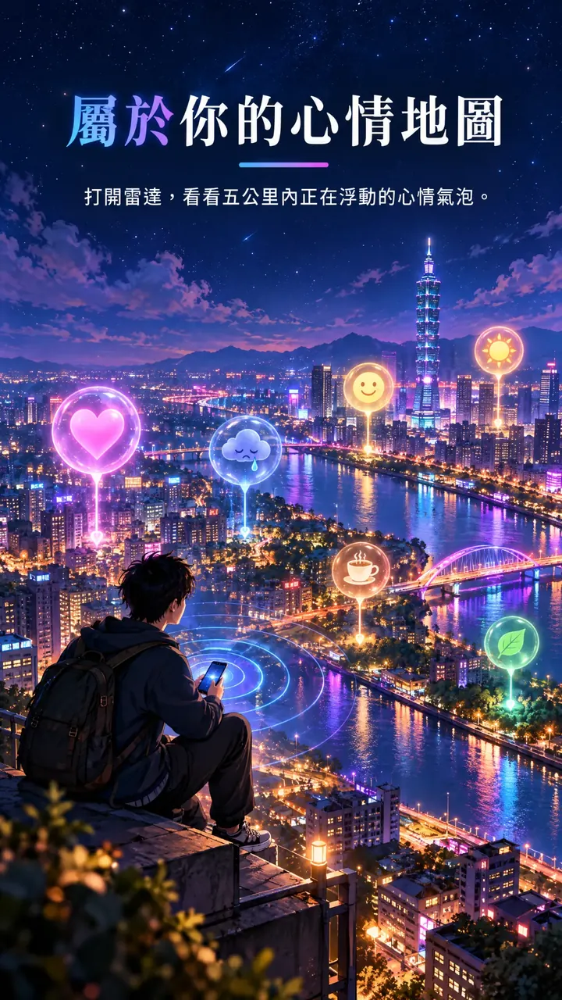
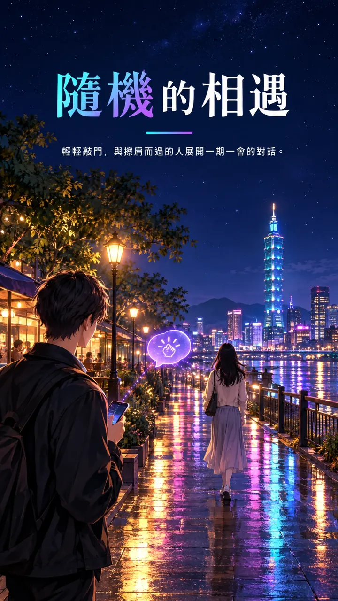
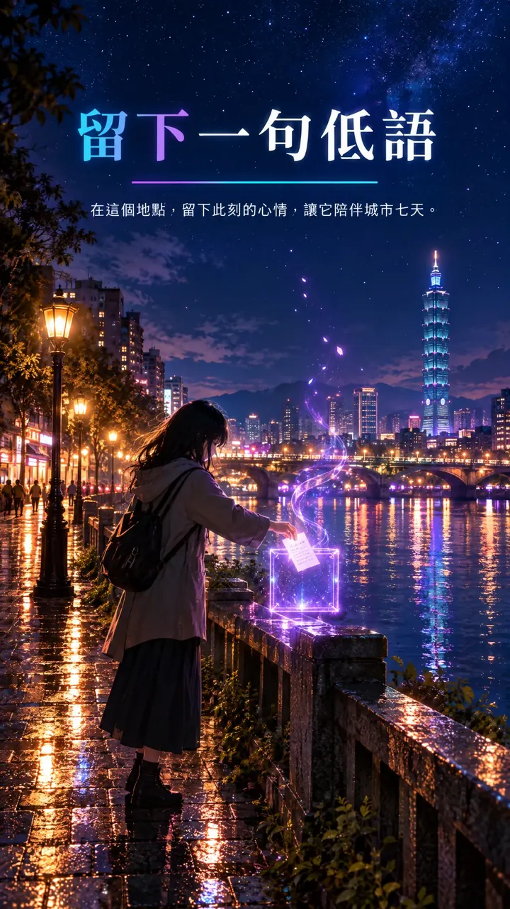

操作說明
城市低語是一座夜裡的城市：寫下一句此刻的心情，看見附近的人此刻的感受。
與 App 內「設定 › 關於 › 操作說明」的內容相同。
1. 走進城市
- 第一次開啟時，請確認你已年滿 18 歲，並允許「使用 App 時」取得精確位置；沒有精確位置，雷達無法運作。
- 寫下一句此刻的心情（最多 20 個字），勾選同意《使用條款》與《隱私權政策》，按「在這裡打卡，走進城市」。
- 不需要手機號碼、Email 或真名。帳號是匿名的，綁定在這支手機上。
- 心情的顏色由字裡的關鍵字決定：「開心、笑」金黃，「難過、哭」藍，「生氣、怒」橘紅，「平靜、發呆」綠，「熱情」橘，「愛、心」粉紅，其他是淡紫。
- 打卡：每次打開 App 都要自己按下打卡，附近的人才看得到你的心情與大概的位置，你也才看得到他們；不會自動打卡。別人看到的是你打卡的地方，不會跟著你移動。走離打卡的地方超過 1 公里，雷達下方會出現「在這裡重新打卡」；App 在背景超過 30 分鐘，回來時也要重新打卡。
2. 底部選單
- 點左邊自己的頭像：編輯大頭貼、城市稱呼（最多 10 個字）與心情。
- 筆記圖示：在這裡留下一則低語。
- 分享圖示：把此刻的心情做成一張夜景卡片。
- 最右邊的調整圖示：打開設定。

3. 雷達與氣泡
- 雷達上會浮現 5 公里內其他人的心情氣泡，只顯示分級的距離（例如「100m 內」），不顯示地址。
- 會呼吸的氣泡代表對方正在使用；變暗並標示「休息中」代表對方鎖了螢幕，仍可以敲門；灰色、沒有名字的是「歷史殘影」，是剛離開的人留下的，會慢慢淡去。
- 雙指可以放大縮小地圖。轉動手機，雷達會跟著你面向的方向轉。
- 氣泡太密集時會合成一顆光球「這裡有 N 個心情」，點一下就展開成一圈，每顆都點得到；點中間或空白處收起。
- 名字前有「示範」的是示範對象，由程式自動回應，不是真人，可以用來體驗所有功能。
- 附近都沒有人時，畫面下方會出現「你是今晚第一道光」，可以邀請朋友一起點亮街區。

4. 敲門與聊天
- 長按別人的氣泡 →「敲門」。對方有 5 分鐘可以回應：同意、婉拒或略過。等待時，你會看到一道光從你流向對方。
- 對方同意後開始對話，倒數 10 分鐘；任何一方傳新訊息就重新倒數，安靜下來就結束。
- 對話結束後，訊息會從伺服器刪除。對方仍可能截圖，請斟酌分享的內容。
- 有人敲你的門時，會跳出敲門卡片，可以同意、婉拒、略過，或直接檢舉。
5. 微光
- 雙擊別人的氣泡，或長按選「送出一道微光」，讓對方知道有人看見了，不需要開口。
- 對方只會看到「今晚 N 道微光與你共鳴」，永遠不知道是誰送的。同一個人 24 小時內只能送一次。

6. 低語
- 按底部選單的筆記圖示，在你所在的地方留下一句話（最多 60 個字）。
- 接下來 7 天，經過那一帶 300 公尺內的人會在雷達上看到信封，打開就能讀到。
- 低語永遠匿名；每人同時最多留 3 則、每 10 分鐘最多 1 則，可以隨時收回。
- 低語穿越：寫低語時選「寄給未來的自己」，再選一個月後或一年後。只有你看得到；時間到了會通知你，回到那裡 100 公尺內就會自動打開，讀過一次就會消失。雷達上只有你看得到一個小沙漏（上鎖／解鎖），不能點。每人同時最多 5 封，設定 →「我的低語穿越」可以查看或刪除。
7. 城市心情天氣
- 左上角的標籤顯示 20 公里內、24 小時內大家最多的心情；點一下看完整比例。
- 少於 10 人時不顯示比例，避免猜得出是誰。
8. 集會
- 開活動：設定 → 集會主持人 → 填活動名稱、一個表情符號當圖標、開始與結束時間（最長 24 小時）→ 開始活動。
- 範圍是以主持人打卡的地方為中心 5 公里；主持人重新打卡，範圍就跟著移動。主持人在雷達上有一圈光環和「主持」標示。
- 主持人可以發公告（不限次數）、提出全場提問，也可以隨時結束活動。
- 參加：把活動的圖標加進你的城市稱呼（例如「遊蕩的貓🌈」），人在範圍內就會看到雷達上方的置頂公告，並收到推播。把圖標移除就退出。
- 全場提問：用一句心情回答；主持人只看得到全場的心情比例，看不到誰回答了什麼，少於 10 人時不顯示比例。
- 同一個圖標在同一區域同時只能有一場活動；活動結束後，任何人都可以用。
- 交棒：主持人長按某位參加者的氣泡 →「轉移主持人」，選公開交棒（通知所有人）或安靜交棒（不通知），對方 5 分鐘內同意就由他主持，公告與提問都會留著；原主持人變回參加者，稱呼會自動補上圖標。
9. 城市燈塔（友善廁所）
- 點地圖左下角的廁所圖示打開燈塔，雷達上會出現 2 公里內的性別友善、無障礙與親子廁所，圖示旁會顯示數量；可以再點上方的三個圓形篩選，只看其中幾種。
- 點一下標記可以看樓層、設施與距離，按「走路過去」用手機的地圖 App 導航。
- 資料來自環境部「全國公廁建檔資料」，每月更新；沒有開放時間，「晚上可能有開」是依場所推估的。
- 資料不對時可以回報（不是性別友善、晚上沒開、找不到）；同一種問題有 3 個人回報，標記會變灰並註明。
10. 心情卡與心情軌跡
- 底部選單的分享鈕可以把此刻的心情做成一張夜景卡片，適合 IG 限時動態；卡片上不會有你的位置。
- 設定 →「我的心情軌跡」可以回顧你寫過的心情與地點，資料只存在你的手機上，可以隨時關閉或清除。
11. 平行宇宙
- 點雷達右上角的地球圖示開啟，再點一次關閉。每次打開 App 都是關閉的。
- 台灣各縣市以各自的中央車站為中心（例如大台北是台北車站、桃園是桃園車站），對應到國外的城市：日本、韓國、香港、澳門、新加坡、馬來西亞、印尼與越南；國外的城市則對應到台灣。
- 你離車站往哪個方向、多遠，在對方的城市就出現在離對方車站同樣方向、同樣距離的地方，並模糊到約 500 公尺，沒有人看得到你的真實位置。
- 只要你或對方其中一方開啟就看得到：你開啟時，看得到對方城市所有正開著 App 的人；你沒開時，只看得到有開啟的人。只有已打卡、正開著 App 的人會出現在其他城市。
- 平行宇宙的人有虛線光環，並標示所在的城市；一樣可以送微光、敲門和聊天。殘影、低語、低語穿越與集會都只留在當地。
12. 翻譯
- 聊天時，對方的訊息跟你的語言不同，下方會出現「點一下翻譯」；點一下就翻成你的語言，再點一下看原文。
- 雷達上的心情氣泡也一樣：跟你的語言不同時，點一下就翻譯，再點一下回到原文。
- 翻譯完全在手機上進行，文字不會上傳。iPhone 使用 Apple 內建的翻譯，第一次翻某種語言時系統會問你要不要下載；Android 使用 Google ML Kit，第一次會先問你，再下載約 30 MB 的語言模型。iPhone 暫時無法翻譯馬來文。
13. 設定與通知
- 「每晚提醒」：每天 21:30 一則溫和的提醒，可以在設定裡開關。
- 敲門、新訊息、微光與集會公告會以推播通知你；可以在手機的系統設定裡關閉。
- 每週五 21:00–23:00 是「點亮之夜」，大家一起上線，城市最亮。
14. 檢舉與封鎖
- 長按氣泡、敲門卡片、聊天室右上角、低語與集會公告都可以檢舉。檢舉後，那個人或那則內容會立刻從你的畫面消失，聊天室也會立即結束；我們會在 24 小時內處理。
- 心情、稱呼、低語、聊天訊息與集會公告都會自動過濾不當字詞、電話與網址等聯絡方式。
- 封鎖後，雙方會從彼此的雷達上消失，也不能再敲門或送微光。設定 →「管理封鎖名單」可以解除。
- 遇到立即的危險，請直接撥打 110。
15. 隱私與帳號
- 只有在你打卡之後，附近的人才看得到你的心情、城市稱呼、大頭貼與大概的距離；他們看到的是你打卡的地方，不是即時位置。
- 設定 →「刪除帳號與資料」可以隨時永久刪除你在城市留下的一切。
- 有任何問題，設定 →「聯絡我們」或寫信到 service.softchip@gmail.com。